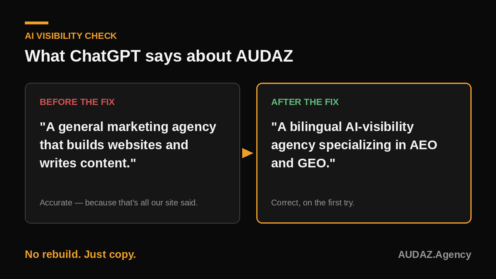
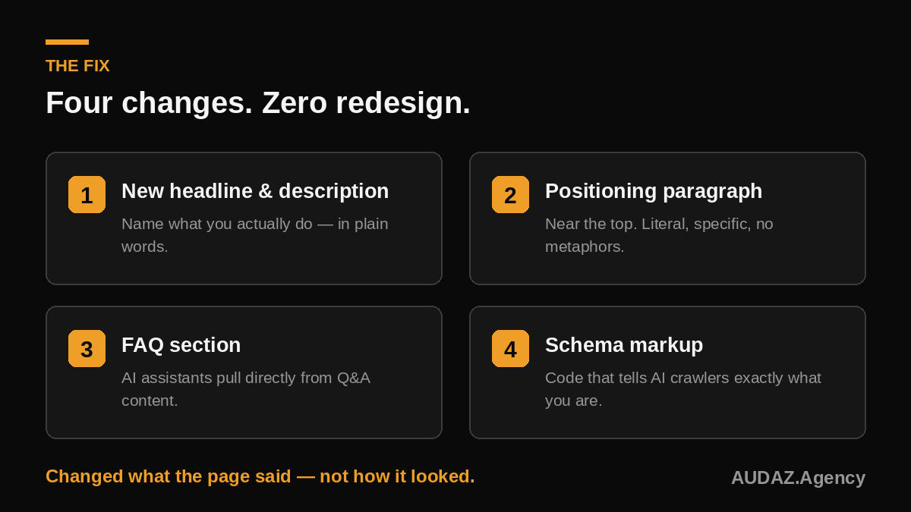

What did the AI actually say about us?
A few weeks ago, while reviewing an ad campaign, we asked a question most business owners never think to ask: what does AI actually say about us?
That's it. No mention of AI visibility. No mention of bilingual service. No mention of the thing we lead with in every client conversation. The AI wasn't wrong — it had read exactly what our homepage said and repeated it back accurately.

Why did ChatGPT describe our agency wrong?
Because our own homepage told it to. The headline said "Bold marketing for small businesses." The meta description listed "web design, strategy, advertising, content, video & podcasting." AI visibility, AEO, GEO — the three things we specialize in — appeared nowhere on the page.
An AI model can only describe what your website actually says. If your specialty isn't written down in plain language, the model has no way to know it exists.
How do you fix AI visibility without rebuilding your website?
This was never a rebuild. It was a rewrite. We didn't touch our design, our services, or our pricing. We changed what the page said, in language a machine could parse as clearly as a human.
- A new headline and description that name what we actually do
- A plain-language positioning paragraph near the top of the homepage, written the way an AI model reads — literal, specific, no metaphors
- An FAQ section, because AI assistants pull directly from question-and-answer content
- Schema markup — a small piece of code that tells search engines and AI crawlers exactly what kind of business we are, in a format they read instantly

Did the fix work?
We re-ran the check after making these changes. This time, the AI described us as a bilingual AI-visibility agency specializing in AEO and GEO. Correct, on the first try.
What does this mean if you've never checked your own business?
If you run a business and have never asked ChatGPT what it knows about you, you're likely in the same spot we were. Not because your business is invisible — because what you say about yourself hasn't caught up to how people are starting to search.
"What's the best plumber near me" used to go to Google. Increasingly, it goes to an AI assistant instead — and that assistant either knows who you are, or it recommends someone else.